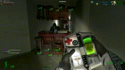
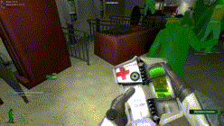
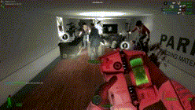
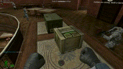
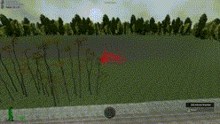
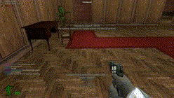
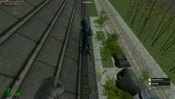

No Clip

In order to move through nailed props press Z to No Clip for a period of time while travelling through a cade for example, alternatively hold Z to go into No Clip mode.
It's important to understand that if loose props (unailed props) are left in a cade, you will not be able to move through the cade.
Heal Player
To heal another player you must have some medkit ammo and the player must be injured, indicated by either the player model changing to a colour shade closer to red when your medkit is equipped or by the health percentage indicator below their name
To heal them simply walk up , aim anywhere on their player model and left click.
Heal Yourself
To heal yourself simply right click. In order to heal yourself you must have enough medkit ammo and you must be injured to some extent.
Use Arsenal or Resupply Crate
 To purchase weapons and resupply your guns or medkits ammo, you will need to visit an arsenal or resupply crate. To access both you will need to walk up and press E.
Please be advised that the resupply crate is only accessible when the lettering on the side of it is green.
Change Message Beacon Message
To change a message beacon message simply equip your message beacon and right click, you will be given a number of different options for what you want the message to be. Once you've pressed ok the new message is then set for that particular message until changed.
Drop Weapon (Give Ammo, Drop Ammo, Give Weapon)
Weapons, ammunition, deployables and medkits can all be dropped or given to other players. This is done is a menu which can be opened by holding alt.
Pack Deployable (Arsenal Crate, Infared Turret, Lamp)
In order to pick up your arsenal crate, infared turret or lamp, simply hold shift while aiming at the deployable. After a period of time, as indicated by the progress bar, the item will be added to your inventory and removed from the map.